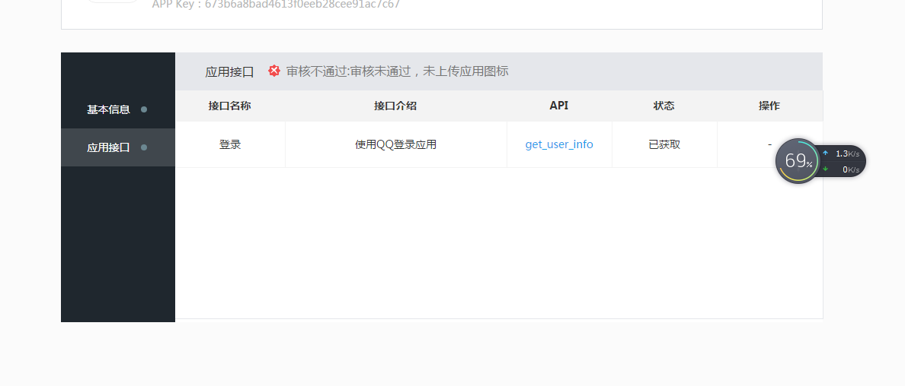

1 申请 成为qq互联开发者
2 拥有自己的服务器资源
3 申请网站应用 并完善资料 提交审核(提交审核过程中 不可以进行操作 7月更新)
4 根据oauth2.0 协议进行开发
5 开发成功 上线
一 申请地址
https://connect.qq.com/manage.html
二 服务器
阿里云 等等都可以 注意顺手给备案了 备案 只需要3天
三 创建应用
选择网站应用!!!
下面一步一步做就可以
注意 网站备案(qq互联更新了,貌似是今年7月开始必须备案)
填写后 提示 会尽快 完成审核
四 开发
审核结束后会 我们可以点击详情 进入
会看到一个appid 和一个 appkey
这是用来换取 accesstoken 进行 获取 用户信息的
我们可以看到应用接口这里 我们 有一个get_user_info 的 权限
这个权限已经足够了

主要获取用户的 昵称 头像 openid qq号 个性签名 等等 你需要存入数据库的!!
举个列子: 如果你是qq用户登录你的网站 那么你默认 昵称是qq昵称 头像是qq头像 等等 绑定的qq号 是这个qq号.....
开发 文档 这里 我们根据文档进行开发
http://wiki.connect.qq.com/%E5%BC%80%E5%8F%91%E6%94%BB%E7%95%A5_server-side
具体开发 第一步:
建立一个index.html
给一个登录按扭 目的 跳转到 qq登录
url 在这里
还是我们打开的 文档 往下拉
成功登录后 会回调到我们填写的回调地址 并且带了参数 code
(注意 我们这里后续的 操作 都在回调地址这里 )
我回调的是qqlogin.php
后续开发 只需要 根据文档 一步一步开发即可 注意使用curl方法进行请求接口
主要参数时候 不要换行!!!!!!!
主要参数时候 不要换行!!!!!!!
主要参数时候 不要换行!!!!!!!
function.php 中的 curl方法
<?php
// 这里是封装的curl 的 get 和post 方法
function https_request($url,$data)
{
// curl 初始化
$ch = curl_init();
// 参数设置
curl_setopt($ch,CURLOPT_URL,$url);
curl_setopt($ch,CURLOPT_SSL_VERIFYPEER,FALSE);
curl_setopt($ch,CURLOPT_SSL_VERIFYHOST,FALSE);
// 这里进行 判断
if ( !empty($data) ) {
curl_setopt($ch, CURLOPT_POST, 1);
curl_setopt($ch,CURLOPT_POSTFIELDS,$data);
}
curl_setopt($ch, CURLOPT_RETURNTRANSFER, 1);
// 执行
$res = curl_exec($ch);
// curl_close($ch);
return $res;
}
function __autoload($classname)
{
if ( file_exists('./Controller/'.$classname.'.php') ) {
include './Controller/'.$classname.'.php';
}
}
?>
qqlogin.php 代码
<?php
include './function.php';
// Step2：获取Authorization Code
$code = $_GET['code'];
// Step3：通过Authorization Code获取Access Token
$url = 'https://graph.qq.com/oauth2.0/token?grant_type=authorization_code&client_id=此处填写你的apppkey&client_secret=此处填写你的apppkey&code='.$code.'&redirect_uri=http://域名/qqlogin.php';
$res = https_request($url);
// var_dump($res);
// 返回的数据
// access_token=YOUR_ACCESS_TOKEN&expires_in=3600
// 切割字符串 获取access_token
$res = explode('&', $res);
$res = explode('=',$res[0]);
$access_token = $res[1];
// Step4：使用Access Token来获取用户的OpenID
$openid_url = 'https://graph.qq.com/oauth2.0/me?access_token='.$access_token;
$openid = https_request($url);
var_dump($openid);
// 获取返回包 获取opendi
// 'callback( {“client_id”:”YOUR_APPID”,”openid”:”YOUR_OPENID”} )';
if (strpos($openid, "callback") !== false)
{
$lpos = strpos($openid, "(");
$rpos = strrpos($openid, ")");
$openid = substr($openid, $lpos + 1, $rpos - $lpos -1);
}
$user = json_decode($openid,true);
$openid_info = $user['openid'];
// $userinfo = 'Step5：使用Access Token以及OpenID来访问和修改用户数据'
// 获取用户信息
$userinfo_url = 'https://graph.qq.com/user/get_user_info?access_token='.$access_token.'&oauth_consumer_key=你的key&openid='.$openid_info;
$userinfo = https_request($userinfo_url);
var_dump($userinfo);
?>